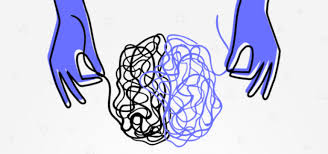
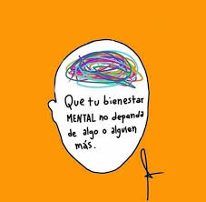
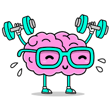
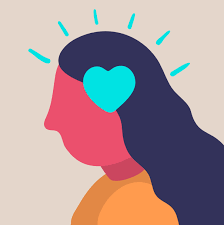

Bienvenidos a la Salud Mental en la Era Digital
En esta página, exploramos cómo la tecnología puede impactar la salud mental de los adolescentes, así como estrategias y competencias digitales para un uso más consciente y saludable.




Planteamiento del Problema
La rápida integración de la tecnología en la vida cotidiana ha generado un cambio profundo en cómo los adolescentes y jóvenes interactúan, aprenden y se relacionan. Sin embargo, el uso excesivo e inadecuado de dispositivos digitales y redes sociales ha traído consigo serias implicaciones en su salud mental. La comparación constante con ideales irreales, el ciberacoso, la dependencia de la validación en redes sociales, y la exposición ininterrumpida a dispositivos son factores que contribuyen al desarrollo de problemas emocionales y psicológicos, como la ansiedad, depresión y problemas de autoestima.
Impacto de la Tecnología en la Salud Mental
El uso excesivo de dispositivos digitales y redes sociales ha mostrado influencias en el bienestar emocional de los jóvenes. La constante exposición puede llevar a:
- Ansiedad y depresión: Compararse con otros en redes puede afectar la autoestima y causar sentimientos de insuficiencia.
- Problemas de sueño: El uso de dispositivos antes de dormir puede interferir con el ciclo del sueño, afectando el rendimiento académico y el estado de ánimo.
- Reducción de la socialización en persona: La interacción en línea puede reemplazar el tiempo que los jóvenes dedicarían a relaciones cara a cara, fundamentales para su desarrollo emocional.
Ciberacoso y su Impacto en los Adolescentes
El ciberacoso es un tipo de acoso que ocurre en el entorno digital. Puede incluir mensajes hirientes, difusión de rumores falsos, e incluso amenazas. Las consecuencias pueden ser:
- Baja autoestima: Los comentarios negativos pueden hacer que los jóvenes duden de sí mismos.
- Depresión y ansiedad: El acoso constante genera sentimientos de desesperanza y aislamiento.
- Dificultades académicas: Los estudiantes pueden ver afectado su rendimiento al sentir un entorno escolar y social hostil.
Para combatir el ciberacoso, es importante:
- Fomentar una e-conciencia emocional, entendiendo cómo los comentarios en línea pueden afectar a otros.
- Utilizar estrategias de autocontrol digital, evitando reaccionar de inmediato a comentarios hirientes y buscando ayuda cuando sea necesario.
Adicción a la Tecnología
La adicción a dispositivos digitales se ha convertido en un desafío de salud mental entre los jóvenes. Los síntomas pueden incluir:
- Pérdida de interés en actividades físicas y recreativas: Los adolescentes pueden dedicar todo su tiempo libre a sus dispositivos.
- Problemas de concentración: Estar constantemente conectados puede dificultar el enfoque en tareas importantes, como los estudios.
- Frustración y dependencia emocional: La tecnología se convierte en un refugio para evitar emociones difíciles, creando dependencia.
Para enfrentar la adicción digital, recomendamos:
- Establecer límites de tiempo en redes sociales y juegos.
- Practicar el mindfulness para mejorar la autoconciencia y reducir la necesidad de distracción digital.
Desarrolla tus E-competencias
Las e-competencias son habilidades digitales emocionales que ayudan a los jóvenes a gestionar su bienestar en un mundo digital. Entre ellas:
- E-conciencia emocional: Identificar y gestionar las emociones que surgen de la interacción digital.
- E-autocontrol: Mantener un uso balanceado de las redes, evitando reacciones impulsivas en línea.
- E-compasión: Practicar empatía en entornos digitales, ayudando a reducir el ciberacoso y promoviendo un ambiente saludable en redes.
Recursos y Ayuda
Si tú o alguien que conoces necesita apoyo con la salud mental, estos recursos pueden ser de ayuda: